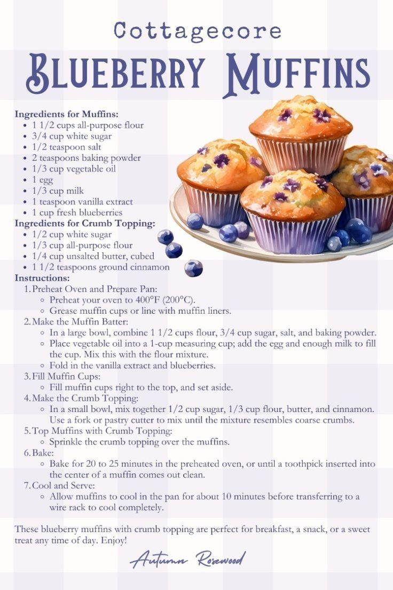

Blueberry Muffins

These blueberry muffins with crumb topping are perfect for breakfast, a snack, or a sweet treat any time of day. Enjoy!
Ingredients For Muffins
- 1 1/2 cups all-purpose flour
- 3/4 cup white sugar
- 1/2 teaspoon salt
- 2 teaspoons baking powder
- 1/3 cup vegetable oil
- 1 teaspoon vanilla extract
- 1 cup fresh blueberries
Ingredients For Crumb Topping
- 1/2 cup white sugar
- 1/3 cup all-purpose flour
- 1/4 cup unsalted butter, cubed
- 1 1/2 teaspoons ground cinnamon
Instructions
- Preheat Oven and Prepare Pan: Preheat your oven to 400°F (200°C); grease muffin cups or line with muffin liners.
- Make the Muffin Batter: In a large bowl, combine 1 1/2 cups flour, 3/4 cup sugar, salt, and baking powder. Place vegetable oil into a 1-cup measuring cup; add the egg and enough milk to fill the cup. Mix this with the flour mixture. Fold in the vanilla extract and blueberries.
- Fill Muffin Cups: Fill muffin cups right to the top, and set aside.
- Make the Crumb Topping: In a small bowl, mix together 1/2 cup sugar, 1/3 cup flour, butter, and cinnamon. Use a fork or pastry cutter to mix until the mixture resembles course crumbs.
- Top Muffins with Crumb Topping: Sprinkle the crumb topping over the muffins.
ss
- Bake: Bake for 20 to 25 minutes in the preheated oven, or until a toothpick inserted into the center of a muffin comes out clean.
- Cool and Serve: Allow muffins to cool in the pan for about 10 minutes before transferring to a wire rack to cool completely.